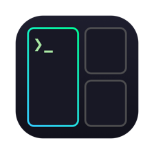

A tiling workspace for developers
One full-screen app with everything a day of coding needs — terminals, a browser, notes, your running servers, Linux machines and Docker — laid out side by side, the way a Linux tiling desktop does it. Nine workspaces, all at your fingertips on the keyboard.
On Linux, many developers live in a tiling desktop: every window has its place on the screen, nothing hides behind anything else, and the keyboard takes you anywhere. MacLucent brings that way of working to the Mac.
It is one app that fills the screen, with its own windows inside it. Open a terminal and it takes half the screen; open a browser and the two share it; open more and they keep making room for each other. Put your editor and servers on one workspace, docs on another, and jump between them with a keypress.
MacLucent runs in its own full-screen Space, so the rest of your Mac stays as it is — swipe across to your other apps whenever you need them.
Fast terminals running bash with your own setup. A new one opens in the folder you're working in. Nerd Font, JetBrains Mono, Fira Code, Cascadia Code and Hack are built in.
Tabs, shared sign-ins, the Web Inspector, and local dev servers that just load. Links that open a new window open as a new tab instead.
See what's listening — dev servers, databases, local tools — and open it in the browser, open a terminal in its folder, or stop it.
Create a Debian, Ubuntu, Fedora, Rocky, AlmaLinux or Alpine machine in a few clicks. It boots in seconds, signs you in, and is ready for ssh.
Your Docker containers and images, grouped by Compose project, with live CPU and memory, logs, and a shell one click away.
Quick Markdown notes with clickable checklists. They're plain files, so any editor or sync tool can use them too.
Catppuccin, Dracula, Nord, Tokyo Night, Gruvbox, Rosé Pine and more, dark and light — borders, terminal colours and wallpaper all change together.
Each workspace tiles its windows or lets them float freely. Drag the gap between two windows to resize them, and set gaps, borders and rounding to taste.
Quit and reopen: your workspaces, layouts, terminal folders and browser tabs come back just as they were.
Everything works with the mouse too. Press Command / any time to see every shortcut.
| Command Return | New terminal |
|---|---|
| Command B | New browser |
| Command D | Open anything by typing its name |
| Command ← → ↑ ↓ | Move between windows |
| Command Shift ← → ↑ ↓ | Swap a window with its neighbour |
| Command 1 … 9 | Go to a workspace |
| Command Shift 1 … 9 | Send the window to a workspace |
| Command F | Make the window fill the screen, and back |
| Command W | Close the window |
| Command , | Settings |
Rather use Option? Settings switches every MacLucent shortcut to the Option key, and Option-Tab then flips through your busy workspaces.
Nothing else is installed: no system changes, no extra permissions.
Settings, notes and Linux machines live in ~/.config/maclucent.
The Containers view needs Docker Desktop, OrbStack or Colima.
For Macs with Apple silicon (M1 or newer) running macOS 13 Ventura or later.